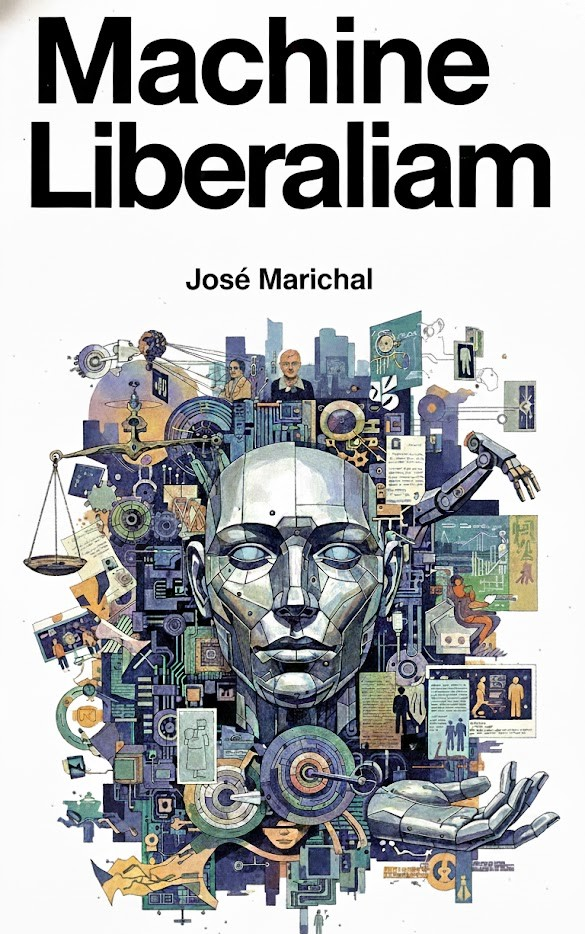

Projects

Dark News
Investigating the prospects for refusing the digital world as an act of resistance.

Rural x AI
An investigation into how AI changes our sense of what it means to be free in a liberal society.

Critical Conversation Research
Exploring whether it is worth resisting AI and it's ultimate power.

Future Project Title
Description of what it means to live in an increasingly synthetic world.